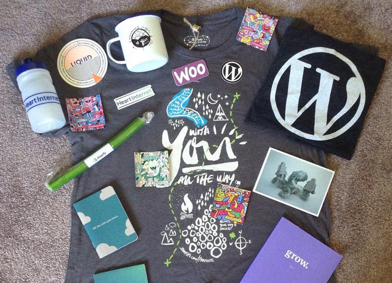

Reasonsto: Design, Code & Create | 2016
Published: 10th September 2016
Reasonsto was everything I expected and more. I met some fantastic people from all over the world and got my hands on some awesome freebies!
The Reasonsto conference is something that I’d only recently heard of and after finding out what it was and the speakers they had coming I knew that I just had to be there. After looking at how much the event cost I found that it was a little out of my price range (being a student and all) but then I saw that you could volunteer which sounded perfect for me and I submitted my application that day. On June 29th I got an email from Jo confirming that I’d been accepted as a volunteer. After receiving this news I was super excited and soon after I got all my travel and accommodation arrangements sorted.
Saturday 3rd September soon came around I was on the train travelling down towards Brighton. I had managed to stay with family who lived not too far away thus saving me a few pennies on accommodation.
The day before the event all the volunteers, I think 20 in total, gathered at Brighton Dome to help set up ready for when all the attendees arrived. After setting up the registration table, which involved sorting and organising the gifts that would be given out to the attendees, we were also given our badges and volunteer t-shirts. I loved the fact that they called us Lifeguards rather than volunteers!


As a volunteer, I was mainly there to register the attendees on Monday, which was the longest day with the earliest start. I think my heart stopped a little when my alarm went off at 5:30am! My specific role was finding their badge and giving it to them along with a schedule and gifts from the sponsors. On the other days, I was there on hand if they needed anything doing. Due to the train strike I actually missed out on helping pack everything away and a group photo. If it ever appears online I’ll have to just Photoshop myself in!
Over the three days of the conference I was able to see 12 speakers (+ the 20 Elevator Pitch speakers) out of 32 which included Eva-Lotta Lamm, Femke van Schoonhoven, Gavin Strange, Jessica Hische, Erik Kessels, Andrew Spooner and Pete Daukintis, Julie Katrine Andersen, Genevieve Gauckler, Marian Bantjes, Mr Bingo, all 20 Elevator Pitch speakers, Stacey Mulcahy, Wilfrid Wood and Seb Lester.
My favourite talks (which were really hard to pick as they were all so good) were:
- Eva-Lotta Lamm: Her talk was more of a practical session as she taught us the basics of sketching. Basically, I’m now amazing at drawing…
- Gavin Strange: He talked about his passion, excitement and shared his insights on finding and doing what you love. I really loved his energy on stage as well the crazy use of GIFs!
- Jessica Hische: From her talk, I learnt the importance of having a set process for all projects, stepping back to critique is key and printing out work can help see what improvements need to be made better than just looking at it on the screen.
- Mr Bingo: He talked about the 37 things he’d learnt. It was really insightful to see what he’s learnt along his journey and the advice he had to give from those things. I also really loved his energy on stage.
- Julie Katrine Andersen: Her talk about taking shit personally was very useful. I loved how much work she put into her personal projects.
- Femke van Schoonhoven: I found her talk, which was about being a hungry designer, not hitting home runs and embracing dopey ideas very helpful as it is very relevant to what I want to do.
It's not about qualifications... It's about making opportunities
Don't take shit from people who don't do shit


I really enjoyed watching these talks as each were amazing, insightful and some were even funny. I think the biggest thing I learnt from these talks is that I need to use GIFs more!
The final day of the event soon came around, which was super sad as I loved every minute of it. I met some amazing people and learnt so much from the speakers. I would like to thank both John and Jo for giving me the opportunity of volunteering and I really hope to do it again!
Reasonsto: is the award-winning 3-day international conference with a festival vibe. Held annually in Brighton UK, it brings the very best international speakers from design and code to take to the stage and inspire, inform, entertain, thrill, teach and network with web designers and coders that attend from all over the world.